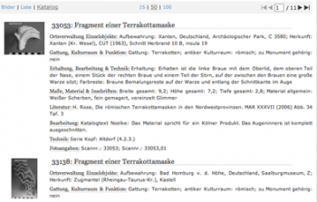

One of the original purposes of Arachne was to support, to simplify and therefore to expedite the work of academic projects. Although the functional aspects and the complexity have increased, this purpose is still effective. Accordingly a great many master, dissertation- and habilitation treatises have been accomplished with Arachne, not only in Cologne.

Further information (in German):
Dies betraf vor allem die Sammlung und Organisation von Informationen, ohne die keine wissenschaftliche Qualifikationsarbeit auskommt: in Form des Anlegens neuer Objektdatensätze mit oder ohne Bilddokumentation sowie der Anreicherung bestehender Objektdatensätze mit zusätzlichen, im Rahmen der Arbeit gewonnenen Forschungs/Meta-Daten. Ganz nach den Wünschen der Autoren konnten die betreffenden Datensätze oder Teile von einzelnen Datensätzen für die allgemeinen Arachne-Nutzer so lange unsichtbar bleiben, bis die Arbeit abgeschlossen bzw. publiziert war; andere wiederum entschieden sich dafür, ihre im Arbeitsprozeß entstehenden Forschungsdaten ständig für alle anderen Arachne-Nutzer offen zugänglich zu halten - einen der bestgehüteten Aberglauben des Wissenschaftsbetriebes verletzend, ohne daß ihnen oder anderen dadurch Schaden widerfahren wäre.
Darüberhinaus können mit Arachne, wie mit jedem anderen Datenbank-Management-System, auch druckfertige Kataloge generiert werden. In besonderen Fällen können die Katalogteile von wissenschaftlichen Arbeiten über Arachne auch publiziert werden, wie dies etwas bei Bänden der Schriftenreihe des DAI Rom »Palilia«, dem DFG-Projekt zur Basilica Aemilia oder Bänden der Kölner Reihe »Monumenta Artis Romanae« der Fall ist. Das Ziel in diesem Teilsegment ist, die Drucklegung von wissenschaftlicher Literatur von umfangreichen Katalog- und Abbildungskompendien zu entlasten, die dort ohnehin informationstheoretisch nicht sinnvoll untergebracht sind, umgekehrt aber unnötig viel Geld kosten.
Das allgemeine Ziel dieser Öffnung Arachnes für wissenschaftliche Qualifikationsarbeiten ist klar: die vorhandenen Daten einerseits in den direkten Forschungsprozeß einzubringen, sie dadurch aber auch qualitativ zu verbessern. Das Potential der Forschungsdaten wird generell unterschätzt und zu wenig genutzt, wohl auch weil sie mit mehrere Tabus behaftet sind, die sich im Gesamthaushalt der Daten eines Faches extrem kontraproduktiv auswirken. Eine erhebliche Anzahl wissenschaftlicher Arbeiten gelangen nie zu dem ursprünglich geplanten Abschluß und erlauben, aufgrund unsystematisch angelegter bzw. gesammelter Forschungsdaten nicht einmal in Ansätzen eine spätere Weiterverwendung der oft aus Steuermitteln teuer bezahlten Vorarbeiten. Zudem sind Forschungsdaten oftmals auch inhaltlich haltbarer, da sie in ihren Kernbestandteilen nicht so stark durch zeitgebundene Interpretationen überformt werden wie wissenschaftliche Texte. Daher sind manche Forschungen der Vergangenheit heute durch ihre Materialsammlungen wichtiger als durch ihre interpretativ-hermeneutischen Ergebnisse.
Daher sollen an dieser Stelle Interessenten ermutigt werden, Ihre Arbeiten durch die Benutzung von Arachne in die Verbesserung des digitalen Informationshaushaltes der Archäologie einzubringen. Wenn Sie Kontakt mit uns aufnehmen und wir eine diesbezügliche Vereinbarung erreichen, werden wir versuchen, im Rahmen des Möglichen die datentechnisch notwendigen Strukturen für Sie zu schaffen und auf dem Wege »Bilder gegen Wissen« die Erstellung der Bilddokumentation zu Ihren Arbeiten zu fördern. Dies Angebot ist, wie oben angemerkt, nicht auf die Universität Köln beschränkt, sondern lediglich auf einen Internetanschluß.